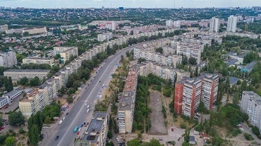

Дніпро – це місто контрастів, у якому вже нікого не здивувати сусідством старовинної архітектурної пам’ятки з новеньким хмарочосом. Проте ми впевнені, що навіть місцеві жителі не знають усіх таємниць, які зберігає у собі історія Дніпра. Пропонуємо дізнатися більше про це унікальне місце разом з нами.

Цікаві та незвичайні факти про Дніпро
Чому історики називають Дніпро містом без дати заснування?
За різними підрахунками, у 2023 році Дніпру виповниться від 237 до 1153 років. Цікаво й те, що конкретної дати святкування Дня міста немає, традиційно він відзначається у другу неділю вересня.
Пов’язаний цей незвичайний факт із тим, що Дніпро засновували, щонайменше 7 разів, зокрема мова йде про заснування поселень на території сучасного міста:
- Перша згадка про заснування монастиря на Монастирському острові візантійськими ченцями датується 870 роком.
- У 1635 році була заснована Кодацька фортеця (Старі Кодаки).
- У 1660 році відбулося заснування поселення Нові Кодаки (Кайдаки).
- Основу слободи Половицю, на якому пізніше розташувався Катеринослав заснували у 1743 році.
- Перша офіційна дата заснування Катеринослава-I – 1776 рік.
- У 1784 році було прийнято указ про заснування Катеринослава на новому місці.
- 1787 рік – дата заснування Катеринослава-II.
- У липні 1926 року Катеринослав було перейменовано на Дніпропетровськ.
- А вже у 2016 році Верховна рада України у рамках процесу декомунізації перейменувала Дніпропетровськ на Дніпро.
Друга Китайська стіна
Будинок, розташований на проспекті Героїв 12, отримав від місцевого населення специфічну назву – “китайська стіна”. Пов’язано це із тим, що довжина будинку становить понад 800 метрів та простягається аж на три тролейбусних зупинки. Ця 9-поверхівка має 36 під'їздів, та понад 1200 квартир.
Дніпровська Китайська стіна вже не один рік змагається з Луцьким будинком-вуликом за звання найдовшого у світі будинку.
Найменший метрополітен у Європі
Дніпровське метро жартівливо називають “платною демоверсією метрополітену”, адже він є найкоротшою підземкою у Європі. Загальна довжина підземної лінії складає всього 7,8 кілометра та налічує 6 станцій.
Вулиця, яка ніколи не змінювала свою назву
Філософська вулиця у Дніпрі зберігає свою первісну назву вже майже 200 років. І її назва свого часу викликала багато жартів у місцевого населення. Річ у тім, що у роки забудови цієї місцини, вулиця Філософська, як і більшість вуличних магістралей міста не була упорядженою, а тому під час злив пройти по ній було майже неможливо. Так, жителі прийшли до висновку, що вулиця отримала свою назву через те, що перш ніж пройти по ній у негоду люди були змушені пофілософствувати та наважитись на цей відчайдушний крок.
Крім цього, вулиця вважалася “єврейською”, адже на ній розташовувалася найбільша кількість синагог, 3-є відділення Талмуд-Тора, притулок для сиріт та єврейська лікарня.